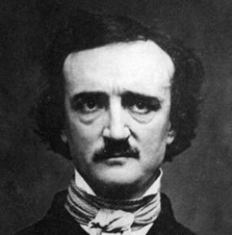

The Works of Edgar Allan Poe

Poe was an American author, critic, editor, and poet. His life was complicated and shorter than some, yet he managed to produce a body of diverse works that endure to this day.
Poems like The Raven, and short stories like The Cask of Amontillado, have become part of the modern literature cannon. In his time (and after), he was often heavily critisized for his dark and macabre themes. Though he wrote other, less dark literature, those that have remained popular are the ones with themes of loss, death, and the line between reality and the unknown.